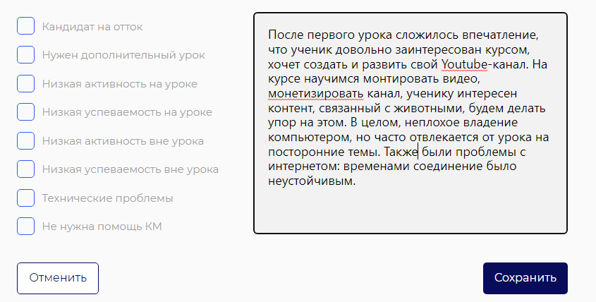

Регламент проведения первого урока для групповых занятий
Перед уроком
До начала урока необходимо открыть все нужные материалы - презентации, kahoot, ученический аккаунт на платформе.
За полчаса до урока необходимо выйти на связь со специалистом тех. поддержки, проверить качество связи и готовность к уроку,
а также факт добавления преподавателя в ученический чат в Telegram.
В рамках занятия необходимо следовать методическим материалам, составленными методистами
ВАЖНО!
После назначения группы преподаватель должен убедиться, что у него открыты необходимые доступы к платформе
и методическим материалам в бэкофисе после назначения новой группы. В случае, если таковых не имеется,
нужно немедленно поставить в известность тимлидера (в будние дни),
либо дежурных тимлидов через бота выходного дня в MyTeam (суббота-воскресенье, праздничные дни)
Обратная связь по ученикам
Обратная связь после М1.У1 формируется в Backoffice преподавателя через "Оценить ученика" по следующему алгоритму:
- Общее впечатление об ученике, его сильных и слабых сторонах
- Цели на курс: чему научится ребенок
- Возникли ли технические проблемы с Zoom, платформой и т.п.

⤶ Назад к главному меню